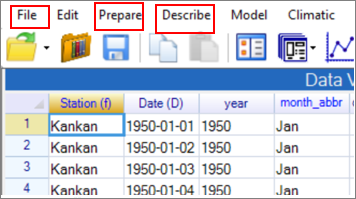
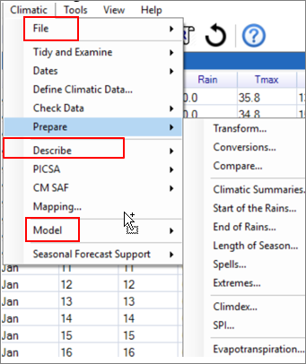

9 Efficient use of R-Instat and R
9.1 Introduction
In this guide Chapters 2 and 3 largely made use of the general facilities in R-Instat, shown in Fig. 8.1a. They were dialogues from the File, Prepare and Describe menus. Chapters 4 to 7 used the climatic menu shown in Fig. 8.1b
| Fig. 8.1a The R-Instat menus | Fig. 8.1b The Climatic menu |
|---|---|
|  |  |
The Climatic menu, Fig. 8.1b, mirrors the general menus, Fig. 8.1a in that parts of this menu correspond to the facilities in the File, Prepare, Describe and Model menus. Thus you start by getting the File with the data. Then there is usually a Prepare stage, where the data are organised and checked, ready for analysis. This stage often includes a “reshaping” of the data, where daily records are summarised to a monthly or yearly basis.
Then the initial analyses are usually descriptive, so use the Describe section of the Climatic menu or the Describe menu itself. The materials in Chapters 4 to 7 were all devoted to descriptive analyses.
When descriptive methods are not enough there is the Model menu to fit and examine statistical models.
For users who are starting their climatic analyses with R-Instat we distinguish between four or five “levels”. These different “levels” are discussed in this chapter.
If your analyses are “standard”, then you may find all you need is in the climatic menu. That is the idea of the special menu.
If you need more, then the general R-Instat menus may be used. The Prepare menu is sometimes needed for more of the initial data manipulation than is in the climatic menu. The powerful ggplot2 graphics system is also available through the Describe menu.
R-Instat includes some “halfway” dialogues, that we discuss in Section 8.3. These are dialogues where you have essentially to write a single R command. That’s quite easy and can be a stepping-stone to using R directly.
Sometimes a dialogue does not do quite what is needed for an analysis. The To Script button, is on each dialogue and copies the relevant R command to a special script window. You can then “tweak” the resulting command(s) to produce the appropriate analysis. This is described in Section 8.4.
Finally, you may be ready to use R “properly”! This is either because the analysis you need is not available in R-Instat, or because the click and point method is becoming tedious and you would like to work more efficiently. One option is then still to start in R-Instat. Then produce the log file, which has a record of all the commands you have used. This may be transferred and should run just the same in RStudio. Then you can continue the analyses using R directly. This process is described in Section 8.5.
Most of the ideas in this chapter and also discussed in more detail in the R-Instat guide called “Reading, Tweaking and Using R Commands”.
Solving problems rather than learning to use R-Instat.
Possibly discuss loops for successive analysis of data for multiple stations
9.2 Using the “ordinary” R-Instat
Could show smoothing with loess and splines, though a bit of that in Chapter 7. Could refer back
Mention export of graphs for an editor: "I'd suggest exporting the figure from R as a vector graphic file (.svg) then adding your labels in a vector graphic software. I use Inkscape software because it can be downloaded for free and its fairly intuitive to learn."
Also discuss data sheet and data book – though also in Chapter 3.
And the metadata windows, including changing names and also altering precision.
Could perhaps be a good place to discuss the Tools > Options dialogue – though maybe that deserves its own section?
On tasks in this section include summary of hourly to daily data probably with the example from the openair package?
9.3 The halfway dialogues
Mention the risks that using these commands brings. Can make mistakes. Good to make some mistakes intentionally so that you are ready for them.
Use an example of infilling data and the calculate dialogue - transform. Could use infilling of temperatures to work towards a complete record.Could install chillR partly because they have an interesting data set where they have introduced missing values. Also because their ideas on infilling will be generally useful for R-Instat in the future.
Then also the model and use model menu. This could include modelling extremes.
9.4 The script window
Add an R package:
install.packages(‘packagename’)
Tried Install.packages(“finalfit”) – which gives an error? Wrong quotes! Use Install.packages("finalfit")
To use data without needing to give the full name include attach(“dataframename”)
library() lists all available packages
library(dplyr) makes the package available, so can give the commands without dplyr:: at the start.
Move the example here from Chapter 3 of adding a skew boxplot.
9.5 The log window and R
| Code to add date to an x-variable |
|---|
# Code generated by the dialog, Line Plot Moorings_by_s_doy <- data_book$get_data_frame(data_name="Moorings_by_s_doy", stack_data=TRUE, id.vars="s_doy", measure.vars=c("prop120.lt.600","prop120.lt.450")) Moorings_by_s_doy <- Moorings_by_s_doy %>% mutate(s_doy=as.Date(s_doy, origin = "2015-07-31")) last_graph <- ggplot2::ggplot(data=Moorings_by_s_doy, mapping=ggplot2::aes(x=s_doy, y=value, colour=variable)) + ggplot2::geom_line() + theme_grey() + ggplot2::theme(axis.text.x=ggplot2::element_text()) + ggplot2::scale_y_continuous(limits=c(0, 1))+scale_x_date(date_labels = "%d %b", date_breaks="1 month") data_book$add_graph(graph_name="last_graph", graph=last_graph, data_name="Moorings_by_s_doy") data_book$get_graphs(data_name="Moorings_by_s_doy", graph_name="last_graph") rm(list=c("last_graph", "Moorings_by_s_doy")) |